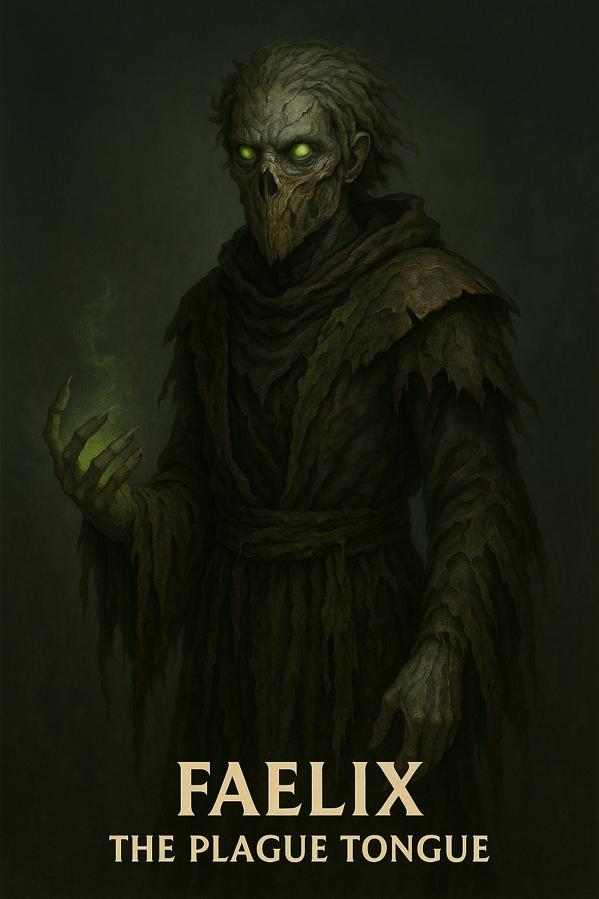

Faelix

Name & Alias: Faelix – The Plague Tongue
Age / Race / Role: Unknown / Corrupted Myrthorian / Biochemical Assassin, Curse Specialist
Appearance: Slender, hunched figure cloaked in diseased robes. His tongue is split and ink-black, seeping toxin.
Affinities & Energy Types: Forbidden Dark, Poison, Disease
Threat Tier: A+/S-Rank
Core Stats (0–10):
• Power: 7
• Speed: 8
• Technique: 9
• Intelligence: 9
• Defense: 5
• Aura Control: 8
Signature Abilities:
• Plaguewhisper Hex
• Tongue Lash Venom
• Miasma Spread Ritual
• Corpse Echo Infliction
• Rot Bloom
Personality Summary: Sadistic and curious. Obsessed with infection and entropy. Speaks in riddles and rot.
Faction or Allegiances: Ashborn Circle (Order of the Abyss)